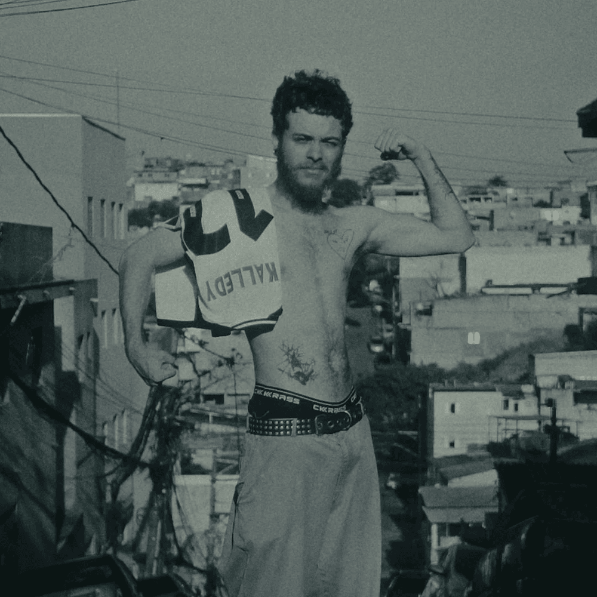

Os artistas underground representam a cena musical independente, criando obras originais e autênticas fora do circuito comercial tradicional. Aqui você encontra alguns nomes da cena brasileira que merecem destaque.
Artistas & Álbuns
Álbum em Destaque

Conheça o álbum mais comentado da cena underground desta semana, "Histórias de kebrada para pessoas malcriadas" traz uma mistura única de ritmos e letras que refletem a realidade urbana com autenticidade e sensibilidade.